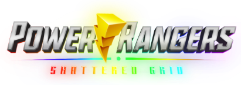

Fan made open world Power Ranger RPG game on Roblox that let you fight evil and do dramatic poses
Embracing the spirits and history of Power Rangers and Super Sentai
STORY
Inspired by the Shattered Grid event by
Boom! Studio
Takes place in the early stages of the war between Zordon and the forces of Lord Drakkon. You play as a Ranger who survived Drakkon’s invasion of your home dimension. Recruited by the Mighty Morphin Rangers from another world, you join the fight to save the Morphing Grid.
MORPHINOMINAL
Relive the childhood fantasy of becoming a
Power Ranger
You are not playing as any existing characters in either series, but as yourself. Pick from a variety of rangers inspired by generations of Power Rangers and Super Sentai teams. Step into the story and morph into the suit you grew up loving.
EXPLORE
Welcome to Fabulous Angle Grove
See familiar landmark from your favorite Tokusatsu show, find hidden location and secrets. Experience a world crafted by passionate fans, with story told through its environment.
COMBAT
Engage in PVE or fight with other players in PVP battles
Each ranger has their own set of weapons, abilities, and power up forms based on their show. Team up with fellow Rangers and fight off the forces of evil or do the opposite for your own amusement. After all, villainy can be fun.
COSMETICS
Customize your rangers and express yourself
From the classic suits to legends beyond the Morphing Grid, customize your Ranger with skins and cosmetics inspired from across the history of Super Sentai and Power Rangers.